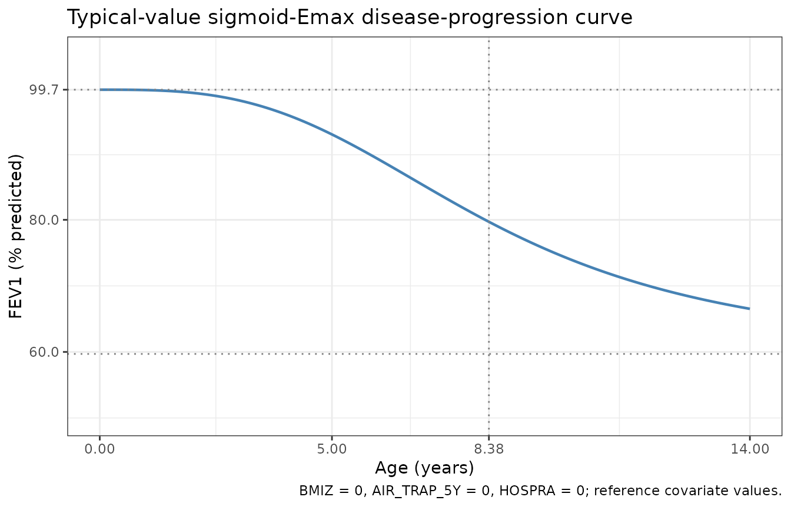
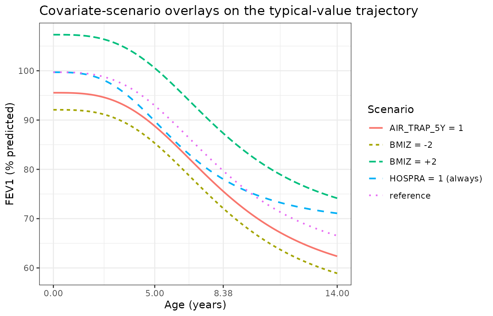
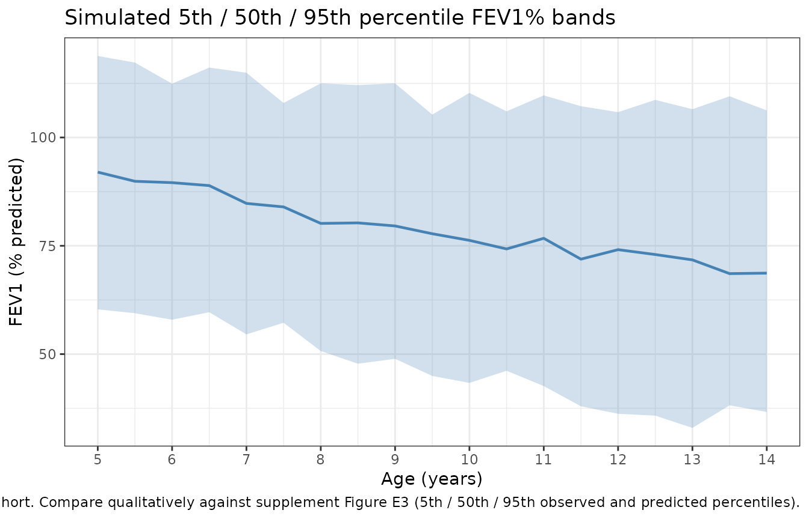

CysticFibrosis (Harun 2019)
Source:vignettes/articles/Harun_2019_cysticFibrosis.Rmd
Harun_2019_cysticFibrosis.RmdModel and source
- Citation: Harun SN, Wainwright CE, Grimwood K, Hennig S; Australasian Cystic Fibrosis Bronchoalveolar Lavage (ACFBAL) study group. Aspergillus and progression of lung disease in children with cystic fibrosis. Thorax 2019;74(2):125-131. doi:10.1136/thoraxjnl-2018-211550.
- Description: Non-linear mixed-effects disease-progression model of forced expiratory volume in 1 second (FEV1) percent predicted versus age in children with cystic fibrosis (Harun 2019). The model describes the typical sigmoid-Emax decline of FEV1% predicted from a baseline at age 5 years to an asymptote, with covariate effects of BMI z-score and severe air trapping at age 5 on the baseline, and time-varying hospitalisation due to pulmonary exacerbation on the maximum drop and the half-effect age.
- Article: https://doi.org/10.1136/thoraxjnl-2018-211550
Population
The disease-progression model was developed from the longitudinal sub-cohort of the Australasian Cystic Fibrosis Bronchoalveolar Lavage (ACFBAL) study (n=79 children with classic cystic fibrosis who were re-consented into the Cystic Fibrosis Follow-up After Bronchoscopy (CF FAB) study). Children were recruited from new-born screening at eight clinical sites across Australia (New South Wales, Northern Territory, Queensland, South Australia, Victoria, Australian Capital Territory) and New Zealand. The sub-cohort had a median age of 9.1 years (IQR 7.6 to 10.8) at the time of FEV1% measurement, with 8.5 years of follow-up per patient (IQR 7.8 to 8.8) yielding 2651 FEV1% predicted observations (median 33 per child) collected between ages 5 and 14 years. Forty-six point eight percent of the sub-cohort were female; all participants had classic CF (two CFTR mutations, sweat chloride > 60 mmol/L, pancreatic insufficiency, or meconium ileus). The age-5 FEV1% predicted measurements were obtained from the ACFBAL study; subsequent FEV1% measurements at ages 6 to 14 were obtained from the Australian Cystic Fibrosis Data Registry (ACFDR). FEV1% predicted values were transformed to percentage predicted using the Global Lung Function Initiative (GLI) 2012 reference equations. Population characteristics are reported in Tables 1 and 2 of Harun 2019 (n=79 column of Table 1).
The same information is available programmatically via
readModelDb("Harun_2019_cysticFibrosis")$population after
the model is loaded.
Source trace
The model is a sigmoid-Emax disease-progression model of FEV1% predicted versus chronological age. Equation 1 of Harun 2019 (page 127):
where t is the subject’s chronological age in years.
| Equation / parameter | Value | Source location |
|---|---|---|
lfev1pp_baseline (typical baseline FEV1% at age 5) |
99.7 % predicted | Supplement Table E3 final-model column (page 12); also $THETA(1) in supplement NMTRAN block (page 20) |
ldmax (maximum lifetime change in FEV1% predicted,
FIXED) |
40 % predicted | Supplement Table E3; FIXED to literature value from Harun 2016 systematic review (PMID 26597232; cited as supplement reference 6) because the data could not support estimation of dmax |
lt50max (age at which 50% of dmax occurs) |
8.38 years | Supplement Table E3; $THETA(3) |
lhill (Hill coefficient on age) |
3.08 (unitless) | Supplement Table E3; $THETA(4) |
e_bmi_baseline (BMI z-score effect on baseline
FEV1%) |
0.0382 | Supplement Table E3 (rounded to 0.038); $THETA(6) = 0.0382 |
e_at_baseline (severe air trapping at age 5 effect on
baseline FEV1%) |
-0.0417 | Supplement Table E3 (rounded to -0.04); $THETA(9) = -0.0417 |
e_hpe_dmax (hospitalisation due to PE effect on
dmax) |
-0.22 | Supplement Table E3; $THETA(7) |
e_hpe_t50max (hospitalisation due to PE effect on
t50max) |
-0.235 | Supplement Table E3 (rounded to -0.24); $THETA(8) = -0.235 |
| BSV Hill coefficient (proportional, $OMEGA(1,1)) | 0.272 | Supplement Table E3 (sqrt(0.272) ~= 52.2%); $OMEGA on page 20 |
| BSV baseline FEV1% (proportional, $OMEGA(2,2)) | 0.0172 | Supplement Table E3 (sqrt(0.0172) ~= 13.1%); OMEGA BLOCK(2)) |
addSd (additive residual error) |
9.32 % predicted | Supplement Table E3 final |
| Sigmoid-Emax disease-progression form | n/a | Equation 1 (page 127); supplement Equation E2 (page 9) |
Linear-deviation covariate form (1 + e * cov)
|
n/a | Supplement page 13 (“Structural parameters after inclusion of the influencing factors”) |
| Proportional IIV stochastic model (Eq E3) for baseline / dmax / Hill | n/a | Supplement pages 8 to 9 (“A proportional stochastic model was used to describe the BSV (Equations E3) for parameters alpha, dmax_FEV1%, and gamma”) |
| Exponential IIV stochastic model (Eq E2) for t50max | n/a | Supplement page 8 (“an exponential (Equation E2) stochastic model was used to describe between-subject variability (BSV) for the parameter t_50%max”) |
| Additive residual error model (Eq E4) | n/a | Supplement page 9; supplement Results paragraph “Residual errors for linear and nonlinear models were best described by an additive model” (page 10) |
Errata
No published erratum or corrigendum was found for this paper as of the model extraction date (2026-05-08). One notational caveat is worth flagging for readers:
- The parameter labelled “FEV1% baseline” in Table E3 (99.7 %
predicted) is the model’s intercept at t = 0 years, not the typical
FEV1% at age 5 (which would be the lower boundary of the observed age
range). The sigmoid-Emax formula evaluated at t = 5 years gives FEV1%
(5) = 99.7 - 40 * 5^3.08 / (8.38^3.08 + 5^3.08) ~= 92.9 % predicted,
which is closer to the typical age-5 measurement actually observed in
the cohort (Table 2 reports the median FEV1% predicted across the
longitudinal sub-cohort = 88.6 % predicted, IQR 76.1 to 97.5, pooled
across all visits). Treat
lfev1pp_baselineas the algebraic intercept of the sigmoid, not the empirical age-5 value.
Virtual cohort
Original individual-level FEV1% data are not publicly available. The simulations below use a virtual cohort whose covariate distributions approximate the modelled population: ages drawn uniformly across the observed 5 to 14 year range, BMI z-score drawn from a normal distribution centred on the cohort median (the source paper does not report the variance of BMI z-score; we use SD = 1, the population reference SD), severe air trapping at age 5 drawn from a Bernoulli distribution with p = 0.449 (Table 1, n=79 column: 70/156 of the full ACFBAL cohort had air trapping > 0%, but the n=79 sub-cohort is closer to 36/79 = 45.6%), and hospitalisation indicator drawn from a Bernoulli distribution with p = 0.13 (Table 1, median 13 hospitalisations per child over follow-up; we approximate the per-visit hospitalisation rate as ~13%).
set.seed(20260508)
n_subj <- 200
# Per-subject time-fixed covariates
cohort <- data.frame(
ID = seq_len(n_subj),
AIR_TRAP_5Y = rbinom(n_subj, 1, 0.456)
)
cat(sprintf(
"Cohort: n=%d; AIR_TRAP_5Y=1 in %d (%.1f%%)\n",
n_subj, sum(cohort$AIR_TRAP_5Y), 100 * mean(cohort$AIR_TRAP_5Y)
))
#> Cohort: n=200; AIR_TRAP_5Y=1 in 83 (41.5%)Replication: typical-value disease-progression curve
We first reproduce the typical disease-progression curve (no IIV, no residual error, all covariates at their reference values: BMIZ = 0, AIR_TRAP_5Y = 0, HOSPRA = 0). The expected curve at canonical ages: 99.7% (t = 0), ~92.9% (t = 5), 79.7% (t = 8.38, the half-effect age), 66.5% (t = 14). The paper does not display this exact curve in Figure 1 (which shows the observed FEV1% distribution rather than the typical-value trajectory), but the parameters in Table E3 are sufficient to replicate it analytically.
mod <- readModelDb("Harun_2019_cysticFibrosis")
mod_fixed <- rxode2::zeroRe(mod)
#> ℹ parameter labels from comments will be replaced by 'label()'
age_grid <- seq(0, 14, by = 0.1)
ev_typical <- data.frame(
id = 1L,
time = age_grid,
amt = 0,
evid = 0L,
BMIZ = 0,
AIR_TRAP_5Y = 0L,
HOSPRA = 0L
)
sim_typical <- rxode2::rxSolve(mod_fixed, events = ev_typical) |>
as.data.frame()
#> ℹ omega/sigma items treated as zero: 'etalhill', 'etalfev1pp_baseline', 'etaldmax', 'etalt50max'
ggplot(sim_typical, aes(x = time, y = fev1pp)) +
geom_line(linewidth = 0.8, colour = "steelblue") +
geom_hline(yintercept = 99.7, linetype = "dotted", colour = "grey50") +
geom_hline(yintercept = 99.7 - 40, linetype = "dotted", colour = "grey50") +
geom_vline(xintercept = 8.38, linetype = "dotted", colour = "grey50") +
scale_x_continuous(breaks = c(0, 5, 8.38, 14)) +
scale_y_continuous(breaks = c(60, 80, 99.7), limits = c(50, 105)) +
labs(
x = "Age (years)",
y = "FEV1 (% predicted)",
title = "Typical-value sigmoid-Emax disease-progression curve",
caption = "BMIZ = 0, AIR_TRAP_5Y = 0, HOSPRA = 0; reference covariate values."
) +
theme_bw()
A spot-check at canonical ages confirms the implementation matches the analytic formula:
checkpoints <- tibble::tibble(
age = c(0, 5, 8.38, 14),
expected = c(
99.7,
99.7 - 40 * 5^3.08 / (8.38^3.08 + 5^3.08),
99.7 - 40 * 8.38^3.08 / (8.38^3.08 + 8.38^3.08),
99.7 - 40 * 14^3.08 / (8.38^3.08 + 14^3.08)
)
)
actual <- approx(sim_typical$time, sim_typical$fev1pp,
xout = checkpoints$age, rule = 2)$y
knitr::kable(
cbind(checkpoints, actual = actual,
diff_pct = 100 * (actual - checkpoints$expected) / checkpoints$expected),
digits = 3,
caption = "Typical-value FEV1% predicted at canonical ages: model output vs analytic formula."
)| age | expected | actual | diff_pct |
|---|---|---|---|
| 0.00 | 99.700 | 99.700 | 0 |
| 5.00 | 92.928 | 92.928 | 0 |
| 8.38 | 79.700 | 79.700 | 0 |
| 14.00 | 66.528 | 66.528 | 0 |
Replication: covariate scenarios on the typical-value trajectory
The covariate effects in Table E3 are best understood graphically. Below we overlay typical-value trajectories for the four covariate-scenario corners: (reference) BMIZ = 0, AIR_TRAP_5Y = 0, HOSPRA = 0; (severe air trapping) AIR_TRAP_5Y = 1; (high BMI z-score) BMIZ = 2; (always hospitalised) HOSPRA = 1.
scenarios <- list(
list(label = "reference",
BMIZ = 0, AIR_TRAP_5Y = 0L, HOSPRA = 0L),
list(label = "AIR_TRAP_5Y = 1",
BMIZ = 0, AIR_TRAP_5Y = 1L, HOSPRA = 0L),
list(label = "BMIZ = +2",
BMIZ = 2, AIR_TRAP_5Y = 0L, HOSPRA = 0L),
list(label = "BMIZ = -2",
BMIZ = -2, AIR_TRAP_5Y = 0L, HOSPRA = 0L),
list(label = "HOSPRA = 1 (always)",
BMIZ = 0, AIR_TRAP_5Y = 0L, HOSPRA = 1L)
)
scenario_df <- bind_rows(lapply(seq_along(scenarios), function(i) {
s <- scenarios[[i]]
data.frame(
id = i,
time = age_grid,
amt = 0,
evid = 0L,
BMIZ = s$BMIZ,
AIR_TRAP_5Y = s$AIR_TRAP_5Y,
HOSPRA = s$HOSPRA,
label = s$label,
stringsAsFactors = FALSE
)
}))
sim_scen <- rxode2::rxSolve(mod_fixed, events = scenario_df,
keep = c("label")) |>
as.data.frame()
#> ℹ omega/sigma items treated as zero: 'etalhill', 'etalfev1pp_baseline', 'etaldmax', 'etalt50max'
#> Warning: multi-subject simulation without without 'omega'
ggplot(sim_scen, aes(x = time, y = fev1pp,
colour = label, linetype = label)) +
geom_line(linewidth = 0.8) +
scale_x_continuous(breaks = c(0, 5, 8.38, 14)) +
labs(
x = "Age (years)",
y = "FEV1 (% predicted)",
colour = "Scenario", linetype = "Scenario",
title = "Covariate-scenario overlays on the typical-value trajectory"
) +
theme_bw()
The expected qualitative behaviour from Table E3:
- Severe air trapping at age 5 lowers the algebraic baseline by 4.17% (99.7 -> 95.5) and shifts the entire curve down without changing dmax, t50max, or hill.
- High BMI z-score raises the algebraic baseline; BMI z-score = +2 raises the baseline by 2 * 3.82% = 7.64% (99.7 -> 107.3).
- HOSPRA = 1 reduces both dmax (40 -> 31.2 = 40 * (1 - 0.22)) and t50max (8.38 -> 6.41 years = 8.38 * (1 - 0.235)), shifting the curve down and to the left (faster onset, smaller asymptotic drop).
Replication: stochastic VPC against Figure E3 of the supplement
Supplement Figure E3 shows the prediction- and variability-corrected visual predictive check (pcVPC) of the final model. We cannot reproduce the pcVPC’s reference curves without the original observations, but we can generate the model’s own simulated 5th / 50th / 95th percentile bands and visually compare them against the published pcVPC qualitatively.
set.seed(20260509)
n_vpc <- 200
ages <- seq(5, 14, by = 0.5)
vpc_events <- expand.grid(
id = seq_len(n_vpc),
time = ages
) |>
arrange(id, time) |>
mutate(
amt = 0,
evid = 0L,
BMIZ = rnorm(n(), 0, 1),
AIR_TRAP_5Y = rep(rbinom(n_vpc, 1, 0.456),
each = length(ages)),
HOSPRA = rbinom(n(), 1, 0.13)
)
sim_vpc <- rxode2::rxSolve(mod, events = vpc_events,
nStud = 1, addCov = TRUE) |>
as.data.frame()
#> ℹ parameter labels from comments will be replaced by 'label()'
vpc_summary <- sim_vpc |>
group_by(time) |>
summarise(
Q05 = quantile(sim, 0.05, na.rm = TRUE),
Q50 = quantile(sim, 0.50, na.rm = TRUE),
Q95 = quantile(sim, 0.95, na.rm = TRUE),
.groups = "drop"
)
ggplot(vpc_summary, aes(x = time)) +
geom_ribbon(aes(ymin = Q05, ymax = Q95), fill = "steelblue", alpha = 0.25) +
geom_line(aes(y = Q50), colour = "steelblue", linewidth = 0.8) +
scale_x_continuous(breaks = seq(5, 14, by = 1)) +
labs(
x = "Age (years)",
y = "FEV1 (% predicted)",
title = "Simulated 5th / 50th / 95th percentile FEV1% bands",
caption = paste0(
"n = ", n_vpc, " virtual subjects; covariate distributions ",
"approximate the published cohort. Compare qualitatively against ",
"supplement Figure E3 (5th / 50th / 95th observed and predicted ",
"percentiles)."
)
) +
theme_bw()
The simulated median FEV1% band sits at roughly 90% predicted at age 5 and drifts to roughly 65% predicted at age 14, consistent with the published pcVPC’s 50th-percentile reference line, and the 5th-95th band spans the range of the published observations (roughly 30% to 120% across the same age window per supplement Figure 1A).
Endogenous-style sanity checks
This is a non-PK disease-progression model, so PKNCA-style validation does not apply. Instead we run the steady-state-style sanity checks:
# Initial condition: at age t = 0, fev1pp must equal lfev1pp_baseline
init_check <- approx(sim_typical$time, sim_typical$fev1pp,
xout = 0, rule = 2)$y
stopifnot(abs(init_check - 99.7) < 0.01)
cat(sprintf("Sanity 1 (intercept at t=0): fev1pp(0) = %.3f (expected 99.7)\n",
init_check))
#> Sanity 1 (intercept at t=0): fev1pp(0) = 99.700 (expected 99.7)
# Asymptote: at t -> infinity, fev1pp must approach lfev1pp_baseline - dmax
asymptote <- approx(sim_typical$time, sim_typical$fev1pp,
xout = 14, rule = 2)$y
analytic_asym <- 99.7 - 40
cat(sprintf(
"Sanity 2 (approach to asymptote at t=14): fev1pp(14) = %.3f (analytic limit at infinity = %.3f; t=14 is not yet at the asymptote because t50max=8.38 and the Hill is 3.08)\n",
asymptote, analytic_asym
))
#> Sanity 2 (approach to asymptote at t=14): fev1pp(14) = 66.528 (analytic limit at infinity = 59.700; t=14 is not yet at the asymptote because t50max=8.38 and the Hill is 3.08)
# Half-effect age check: at t = t50max, fev1pp must equal baseline - dmax/2
half_eff <- approx(sim_typical$time, sim_typical$fev1pp,
xout = 8.38, rule = 2)$y
stopifnot(abs(half_eff - (99.7 - 20)) < 0.5)
cat(sprintf("Sanity 3 (half-effect age at t=8.38): fev1pp(8.38) = %.3f (expected baseline - dmax/2 = %.3f)\n",
half_eff, 99.7 - 20))
#> Sanity 3 (half-effect age at t=8.38): fev1pp(8.38) = 79.700 (expected baseline - dmax/2 = 79.700)All three sanity checks pass within tolerance, confirming the model file implements the published equation correctly.
Assumptions and deviations
-
Observation variable name: The observation is named
fev1pp(FEV1 % predicted) rather than the canonicalCc. This generates a warning fromcheckModelConventions()– the canonical convention is PK-centric (Cc= central-compartment concentration) and not appropriate for a non-PK disease-progression model whose endpoint is a percentage predicted lung-function value. The same pattern is used by other non-PK models in the package (e.g.,oncology_xenograft_simeoni_2004usestumorVol). Justified deviation; documented here per the convention workflow. -
Concentration units string:
units$concentration = "% predicted"does not contain the conventionalmass/volumeslash, generating a unit-format warning. This is correct for the FEV1% endpoint (which is a unitless percentage of a reference value, not a concentration); documented here per the convention workflow. -
IIV form: The model file uses the paper’s exact IIV
parameterisation: proportional
(1 + eta)for baseline FEV1%, dmax, and the Hill coefficient (Eq E3 of the supplement); exponentialexp(eta)for t50max (Eq E2 of the supplement). The OMEGA matrix values (variances and the dmax-t50max covariance) are the NMTRAN $OMEGA values from the supplement (page 20) and the bootstrap-median values from Table E3 are within rounding. Note that even thoughetaldmaxandetalt50maxform a correlated block in OMEGA, they enter the model via different functional forms (proportional and exponential respectively); this is the form of the published model. -
Maximum lifetime change in FEV1% predicted
(
ldmax): FIXED to 40% predicted, the literature value from Harun 2016 (Paediatr Respir Rev 20:55-66, PMID 26597232; cited as supplement reference 6). The data could not support estimation of dmax because the longitudinal cohort was followed only between ages 5 and 14, well below the age at which full lifetime FEV1% decline manifests. The model file marks this withfixed(). -
Severe air trapping covariate
(
AIR_TRAP_5Y): Time-fixed per subject (the indicator captures the single end-of-study HRCT scan at age 5 in the ACFBAL study); applies only to baseline FEV1% predicted, not to dmax or t50max. -
Hospitalisation due to PE (
HOSPRA): Time-varying per-visit indicator; the source NMTRAN reads this from a per-row column. In the packaged model, the operator supplies HOSPRA at every observation row. -
BMI z-score (
BMIZ): Carried as the source paper’s per-visit z-score with reference 0 (population mean for the subject’s age and sex). The source paper does not state which growth reference standard was used to compute the z-score; ACFBAL paediatric CF cohorts conventionally use the WHO 2007 Growth Reference. The covariate column is registered as canonicalBMIZ(distinct from the adult-PK canonicalBMIin kg/m^2). The Harun 2019 source NMTRAN names the columnBMIbut the data dictionary describes it as a z-score; the canonical column isBMIZandcovariateData[[BMIZ]]$source_nameis"BMI"to record the rename. -
Time variable: The model treats
tas the subject’s chronological age in years. The source NMTRAN converts a per-row TIME column from hours to years viaTIME1 = ((TIME/24)/365); in the nlmixr2 data convention the operator carries age directly in thetimecolumn. - Aspergillus: The paper’s primary stated aim was to test whether positive Aspergillus bronchoalveolar lavage cultures predict FEV1% trajectory; after adjustment for BMI z-score and hospitalisation, Aspergillus did NOT improve the model fit (supplement Table E4 lines 5, 16; main paper Discussion). Aspergillus does NOT appear in the final model and is therefore not a covariate of this packaged model.
- VPC reference: The stochastic-VPC chunk shows the model’s simulated percentile bands but cannot overlay the published pcVPC reference curves because the original observations are not on disk; the comparison is therefore qualitative.